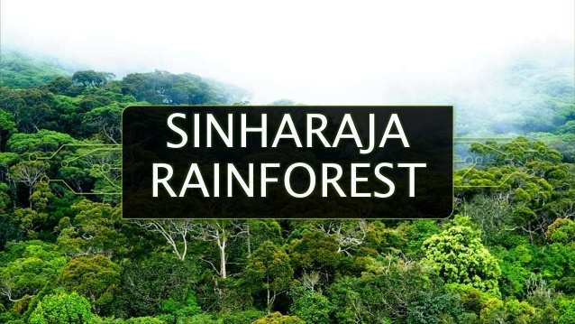

Sinharaja Rain Forest
Sinharaja Rain Forest (a UNESCO World Heritage Site), the last viable remnant of Sri Lanka's tropical lowland rainforest spanning an area of 18900 acres is located within Sabaragamuwa and Southern provinces of the south-west lowland wet zone of Sri Lanka. Sinharaja is bounded by rivers on three sides.On the north, Sinharaja is bounded by the Napola Dola and Koskulana Ganga. On the south and south-west are the rivers Maha Dola and Gin Ganga. On the west are the river Kalukandawa Ela and river Kudawa Ganga. To the east of Sinharaja is an ancient footpath near Beverley Tea Estate and by the Denuwa Kanda.
Reaching Sinharaja Rain Forest
From Northern or western parts of the country you can reach Sinharaja Forest Reserve via Ratnapura, Kiriella, Kalawana, Weddala. From the South you can enter Sinharaja Rain Forest from Deniya. Coming form Hambantota, Udawalawe you can enter Sinharaja from Rakwana side.
 Yala National Park (also known as Ruhunu National Park) is the most visited and second largest national park in Sri Lanka. It consists of five blocks, two of which are now open to the public; and also adjoining parks. It is in the southeast region of the country, and lies in Southern Province and Uva Province. The park covers 979 km² (378 sq mi) and is about 300 km (190 mi) from Colombo. Yala was designated as a wildlife sanctuary in 1900, and, along with Wilpattu it was one of the first two national parks in Sri Lanka, having been designated in 1938. The park is best known for its variety of wild animals. It is important for the conservation of Sri Lankan Elephants and aquatic birds.
Yala National Park (also known as Ruhunu National Park) is the most visited and second largest national park in Sri Lanka. It consists of five blocks, two of which are now open to the public; and also adjoining parks. It is in the southeast region of the country, and lies in Southern Province and Uva Province. The park covers 979 km² (378 sq mi) and is about 300 km (190 mi) from Colombo. Yala was designated as a wildlife sanctuary in 1900, and, along with Wilpattu it was one of the first two national parks in Sri Lanka, having been designated in 1938. The park is best known for its variety of wild animals. It is important for the conservation of Sri Lankan Elephants and aquatic birds.